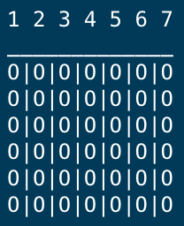

This is my Connect 4 project I made in Python. You can download the game and try it out yorself!
There are two different versions of the game: one that is two player and one with an AI that allows you to play against the computer. To make a move in the game you simply type what column you want to drop your tile into. (The column numbers are indicated above the board. The board is them updated to show where your tile dropped to. "R" indicates red tiles and "B" indicates black tiles. The players alternate turns until one player gets 4 in a row. If the entire board fills up, and no one has on, the game ends in a tie.
One of the hardest things when making a terminal game like this one, is making the game feel and look right with only the characters avalible to you. Internally, the board is stored as a two dimensional list, but when it is printed out, it is nicely formatted in to rows and columns so that it is easy for the user to play. This is what an empty board looks like.
The hardest part about making this game was designing the AI. In rule based games like this, AIs generally work by thinking ahead and trying all the different possibilities. The more steps they think ahead the smarter the AI is. But this comes with a trade off. As the number of steps increases, the number of calculations that the computer has to do grows exponetially. If the AI has to compute too many steps, it will take a really long time. The AI in this game isn't very smart. It only calculates two steps ahead. It calculates if it can win on the next turn or if the other player can win on their next turn.